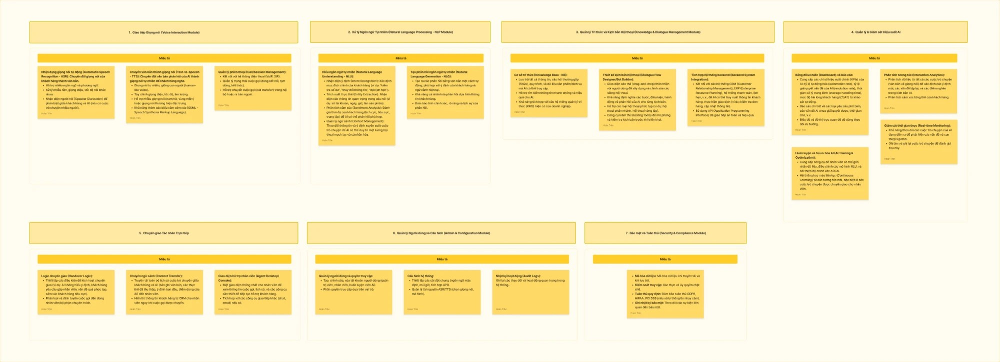
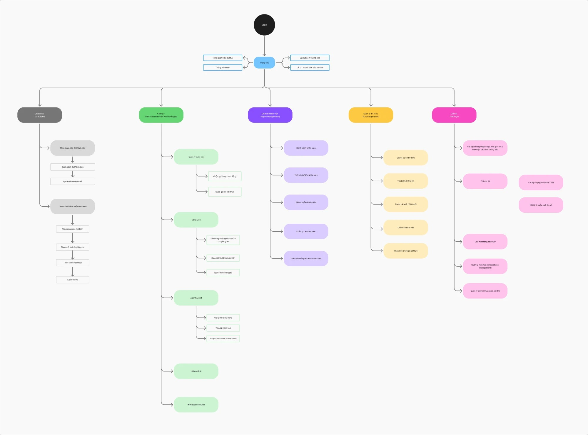
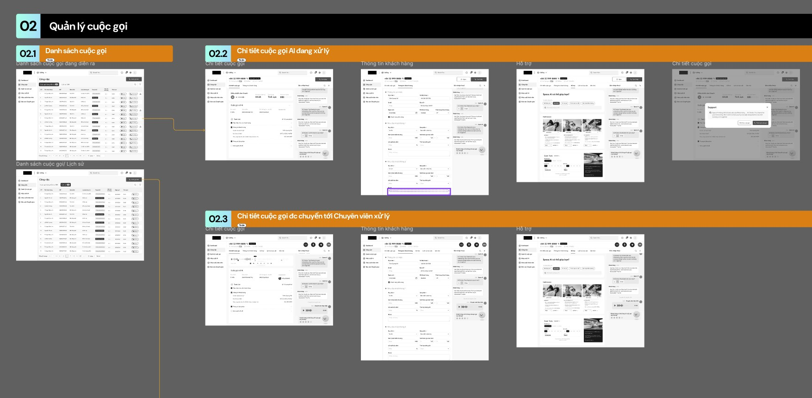
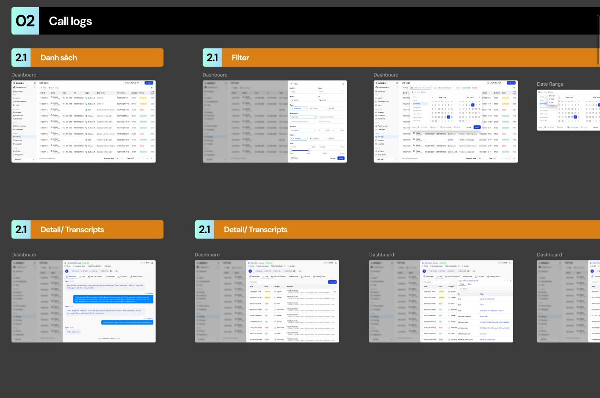

Space AI
Khi AI nhấc máy thay bạn: thiết kế một trợ lý cuộc gọi thông minh mà người dùng đủ tin để giao việc.When AI picks up for you: designing a smart call assistant people trust enough to hand over the call.
01 — Bối cảnh01 — ContextTiện ích thông minh cho cuộc gọiSmart utilities for calls
Space AI xây dựng các tiện ích liên quan đến gọi và xử lý cuộc gọi bằng AI. Thách thức là biến một công nghệ vô hình thành trải nghiệm rõ ràng: người dùng cần hiểu AI đang làm gì, kiểm soát được nó và tin vào kết quả.
Space AI builds utilities for AI-based calling and call handling. The challenge is turning invisible technology into a clear experience: users need to understand what the AI is doing, stay in control and trust the result.
02 — Vai trò02 — RoleTừ cấu trúc thông tin đến thương hiệuFrom information architecture to brand
Phân tích tính năngFeature analysis
Nghiên cứu nhu cầu người dùng, phân tích tính năng và cấu trúc thông tin sản phẩm.
Research user needs, analyse product features and information structure.
Trải nghiệm AIAI experience
Thiết kế luồng xử lý cuộc gọi, trạng thái AI và các điểm người dùng can thiệp.
Design call-handling flows, AI states and the moments users step in.
Branding guideline
Định hình phong cách, cân bằng thẩm mỹ, tính khả dụng và mục tiêu sản phẩm.
Define the style, balancing aesthetics, usability and product goals.
03 — Brainstorm03 — BrainstormBóc tách sản phẩm thành 7 moduleBreaking the product into 7 modules
Trước khi vẽ màn hình, mình cùng team bóc tách toàn bộ năng lực của một tổng đài AI thành 7 module, mỗi module ghi rõ mô tả và các tính năng con:
- Giao tiếp giọng nói — nhận dạng giọng nói (ASR), chuyển văn bản thành giọng nói tự nhiên (TTS), quản lý phiên gọi qua VoIP/SIP.
- Xử lý ngôn ngữ tự nhiên — hiểu ý định, trích xuất thực thể, phân tích cảm xúc, giữ ngữ cảnh hội thoại; tạo câu trả lời tự nhiên.
- Tri thức & kịch bản hội thoại — cơ sở tri thức, trình thiết kế luồng hội thoại kéo-thả, tích hợp CRM/ERP qua API.
- Quản lý & giám sát hiệu suất AI — dashboard KPI, phân tích tương tác, huấn luyện và tối ưu AI, giám sát thời gian thực.
- Chuyển giao cho nhân viên — logic chuyển giao, truyền ngữ cảnh cuộc gọi, giao diện hỗ trợ nhân viên.
- Quản trị & cấu hình — người dùng và phân quyền, cấu hình hệ thống, nhật ký hoạt động.
- Bảo mật & tuân thủ — mã hoá dữ liệu, kiểm soát truy cập, tuân thủ GDPR / HIPAA / PCI DSS.
Before drawing any screens, the team and I broke the full capability of an AI contact centre into 7 modules, each with a description and its sub-features:
- Voice interaction — speech recognition (ASR), natural text-to-speech (TTS), call/session management over VoIP/SIP.
- Natural language processing — intent recognition, entity extraction, sentiment analysis, context tracking; natural response generation.
- Knowledge & dialogue management — knowledge base, drag-and-drop dialogue flow designer, CRM/ERP integration via API.
- AI management & monitoring — KPI dashboards, interaction analytics, AI training and optimisation, real-time monitoring.
- Live agent handover — handover logic, context transfer, agent desktop.
- Admin & configuration — users and permissions, system configuration, audit logs.
- Security & compliance — data encryption, access control, GDPR / HIPAA / PCI DSS compliance.

04 — Sitemap04 — SitemapCấu trúc thông tin theo vai tròInformation architecture by role
Từ 7 module, mình dựng sitemap: sau đăng nhập, Trang chủ tổng hợp hiệu suất AI, thống kê nhanh, cảnh báo và lối tắt; từ đó chia thành 5 khu vực chính:
- Quản lý AI (AI Builder) — chọn mô hình theo nghiệp vụ, thiết kế nội dung hội thoại, kiểm thử AI.
- Calling — dành cho nhân viên và chuyển giao: quản lý cuộc gọi, hàng đợi công việc, Agent Assist (gợi ý trả lời, tóm tắt hội thoại, tra cứu nhanh tri thức), hiệu suất AI và nhân viên.
- Quản lý nhân viên — danh sách, phân quyền, lịch làm việc, giám sát thời gian thực.
- Quản lý tri thức — duyệt, tìm kiếm, thêm/sửa bài viết & FAQ, phân tích truy vấn.
- Cài đặt — cài đặt chung, AI (giọng nói ASR/TTS, mô hình ngôn ngữ), tổng đài VoIP, tích hợp, quyền truy cập & vai trò.
From the 7 modules I built the sitemap: after login, the home screen summarises AI performance, quick stats, alerts and shortcuts, then branches into 5 main areas:
- AI management (AI Builder) — choose a model per use case, design conversations, test the AI.
- Calling — for agents and handover: call management, work queue, Agent Assist (reply suggestions, conversation summary, quick knowledge lookup), AI and agent performance.
- Agent management — list, permissions, schedules, real-time monitoring.
- Knowledge base — browse, search, add/edit articles & FAQs, query analytics.
- Settings — general, AI (ASR/TTS voice, language model), VoIP switchboard, integrations, access & roles.

05 — Hi-fi wireframe05 — Hi-fi wireframeQuản lý cuộc gọi: AI xử lý, người tiếp quảnCall management: AI handles, humans take over
Hi-fi wireframe tập trung vào luồng quan trọng nhất — Quản lý cuộc gọi:
- Danh sách cuộc gọi — cuộc gọi đang diễn ra và lịch sử.
- Cuộc gọi AI đang xử lý — xem hội thoại thời gian thực, thông tin khách hàng và khung hỗ trợ.
- Cuộc gọi được chuyển cho chuyên viên — chuyên viên nhận đủ ngữ cảnh (transcript, thông tin khách hàng, nhu cầu) để tiếp quản mà không phải hỏi lại.
The hi-fi wireframes focus on the most critical flow — call management:
- Call list — live calls and history.
- AI-handled call — real-time conversation, customer info and a support panel.
- Call handed to a specialist — the specialist gets full context (transcript, customer info, needs) to take over without asking again.

06 — UI · Call logs06 — UI · Call logsMỗi cuộc gọi đều truy vết đượcEvery call is traceable
Luồng Call logs trên giao diện hoàn thiện: danh sách cuộc gọi với trạng thái, bộ lọc nhiều điều kiện (agent, số gọi, loại cuộc gọi, lý do kết thúc, thời lượng, trạng thái) và chọn khoảng thời gian; màn chi tiết cho phép xem transcript, log hệ thống và các bước xử lý của AI để đội vận hành rà soát và cải thiện.
The Call logs flow in final UI: a call list with statuses, multi-criteria filters (agent, numbers, call type, end reason, duration, status) and a date-range picker; the detail view shows the transcript, system logs and the AI’s processing steps so operations teams can review and improve.
